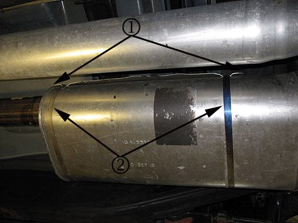
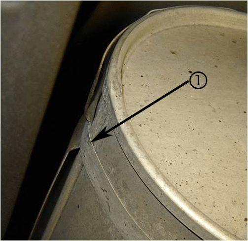
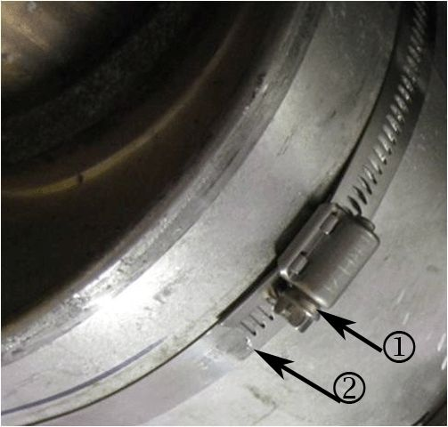
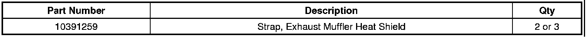
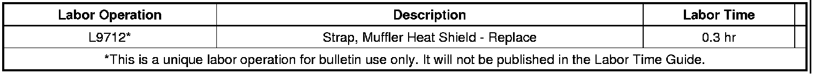

Exhaust - Muffler Heat Shield Buzz During Operation
TECHNICALBulletin No.: 07-06-05-001I
Date: March 22, 2011
Subject: V8 Engines - Muffler Heat Shield Buzz During Vehicle Operation (Perform Repair as Outlined) or Exhaust Pinging/Popping/Snapping Noise During Cool Down, at Idle, or After Vehicle is Shut Off (Normal Characteristic - No Repair Required)
Models:
2007-2011 Cadillac Escalade, Escalade Hybrid, Escalade ESV, Escalade EXT
2007-2011 Chevrolet Avalanche, Silverado, Suburban, Tahoe, Tahoe Hybrid
2007-2011 GMC Sierra, Sierra Denali, Yukon, Yukon Hybrid, Yukon XL, Yukon Denali, Yukon Denali XL
Equipped with the following V8 Engines:
- 4.8L (RPO LY2, L20)
- 5.3L (RPOs LC9, LH6, LMG, LY5)
- 6.0L (RPOs LFA, LY6, LZ1, L96)
- 6.2L (RPOs L9H, L92, L94)
Please Refer to GWM/IVH
Supercede:
This bulletin is being revised to update the Condition, Cause and Correction information. Please discard Corporate Bulletin Number 07-06-05-001H (Section 06 - Engine/Propulsion System).
Condition 1
Some customers may comment on a pinging/popping/snapping noise from underneath the vehicle at idle or immediately after the vehicle is shut off. Pinging/popping/snapping noise from the exhaust system during cool down is a normal condition. The noise may be intermittent depending on the outside temperature and or temperature of the exhaust system at the time of testing.
Cause 1
Exhaust Pinging/Popping/Snapping
As the exhaust system cools, the muffler shell and muffler internals contract at different rates. Pinging/popping/snapping noise from the exhaust system during cool down is a normal condition.
Correction 1
DO NOT REPLACE THE EXHAUST SYSTEM COMPONENTS.
Exhaust Pinging/Popping/Snapping Noise (Normal)
This condition is normal to the muffler design and does not indicate poor quality or part failure. No repairs are necessary for this condition. Replacing the muffler heat shield straps will NOT eliminate this noise. A new muffler may sound quiet for this condition, but as it ages may again produce this same condition.
Condition 2
Some customers may also comment on a buzz noise coming from the muffler during vehicle operation.
Cause 2
Muffler Heat Shield Buzz
If the muffler heat shield straps are loose, the heat shield may be free to buzz during vehicle operation.
Correction 2
DO NOT REPLACE THE EXHAUST SYSTEM COMPONENTS.
Muffler Heat Shield Buzz (Perform Repair)
Confirm the origin of the buzz by shimming (use metal shims) the straps tight and rerunning the vehicle. If the buzz concern is gone, then it is caused by the loose shield. Using the following procedure, install new straps to secure the heat shield to the muffler.
1. Raise and support the vehicle. Refer to Lifting and Jacking the Vehicle in SI.

2. Mark the position of the heat shield (1) and straps (2) on the muffler shell.

3. Cut and remove the heat shield straps using tin snips along the muffler shell seam (1), and remove the shield from the muffler.

4. Position the heat shield to the muffler and install new heat shield straps on the muffler shell in the positions marked prior to removal.
Important
Do Not position the strap screw heads directly across from the propeller shaft. Ensure the strap heads are positioned below the midpoint of the muffler.
5. Position the strap screw heads (1) on the inboard side of the muffler. Ensure that the strap screw heads (1) are below the midpoint of the muffler.
Tighten
Tighten the straps to 4 Nm (35•lb•in).
6. Cut off the excess strap material and ensure that the ends (2) are flat against the muffler.
Parts Information

Warranty Information
For vehicles with Exhaust Pinging/Popping/Snapping Noise, NO repairs are necessary as it is a normal condition.

For vehicles repaired for a muffler buzz, use the labor operation.

Disclaimer